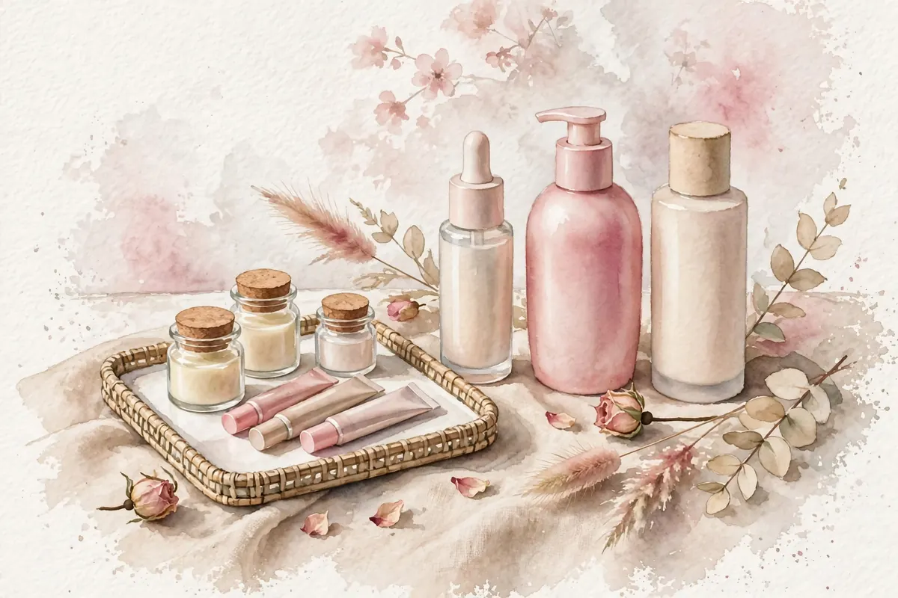
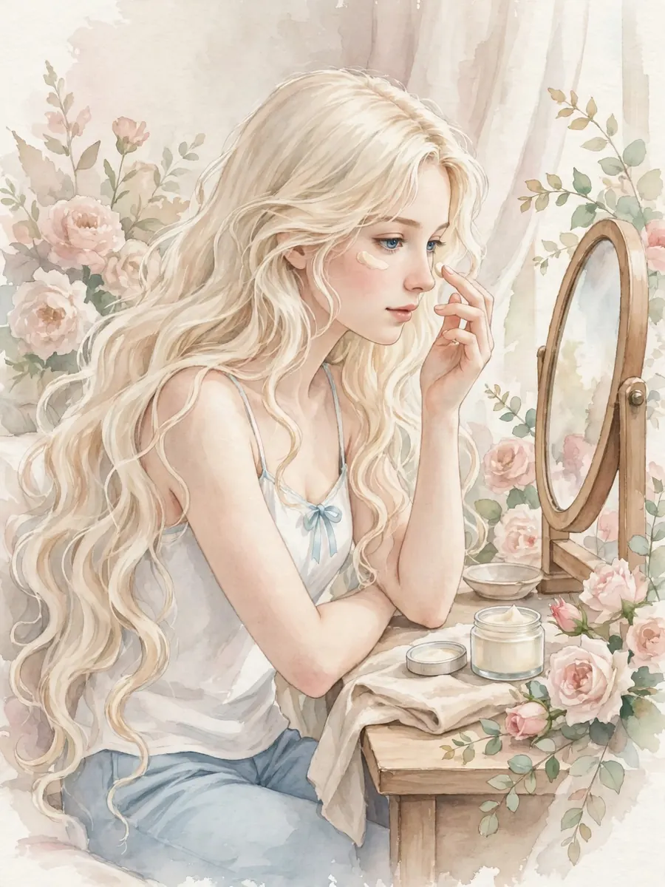

トップ ＞ スキンケア ＞ 部分用アイテムの置き場所と使う順番
部分用アイテムの置き場所と使う順番

目元用、口元用、首用といった部分用のアイテムは、全体のケアに「追加」する形で使うものが多いため、塗り忘れが起きやすいアイテムでもあります。この記事では、部分用アイテムの置き場所と順番の決め方を整理します。
順番は、商品の表示と「薄い順」が手がかり
部分用アイテムを使う順番は、まず商品の表示にある案内が基本です。「化粧水のあとに」「仕上げの前に」といった指定がある場合は、それに従います。指定がない場合は、テクスチャーの軽いものから重いものへ、という全体の流れの中に位置づけるのが考え方のひとつです。
施術でも、部分へのアプローチは全体の流れの中で位置づけます。部分用だけを独立した作業にせず、「全体のこの段階で入れる」と決めておくことが、順番を安定させるコツです。
置き場所は「使う瞬間の手の届く範囲」に
塗り忘れの多くは、置き場所が原因です。全体用の列とは別の引き出しにしまっていると、使う瞬間に思い出せません。部分用は、全体用の並びの中の「使う順番の位置」に一緒に並べておくのがおすすめです。棚の並びが手順書になる、という考え方は、ここでも同じです。
小さな容器は倒れたり、ほかの容器の陰に隠れたりしがちです。小さなトレーに部分用だけをまとめて置くと、視界に入りやすくなります。見える場所にあることが、習慣の土台です。
塗るときは、指の腹で少量ずつ
部分用は範囲が狭いぶん、量は少量で足ります。指の腹に取り、押さえるように置いていく動かし方が基本です。目元など皮膚の薄い部分は、とくに力を入れず、薬指など力の入りにくい指を使う方法も知られています。
部分用を使ってもいつもと違う反応が出る場合は、その部分だけ使用を止めて様子を見てください。範囲が狭いぶん、変化にも気づきやすいはずです。気になる状態が続くときは、皮膚科などの専門家に相談を。
季節で入れ替える部分用もある
部分用アイテムの中には、季節で出番の変わるものがあります。乾きやすい季節に使う部分と、汗ばむ季節に気になる部分は違うからです。棚の並びも、季節の変わり目に部分用の位置を見直すと、その季節の手順に合った配置になります。使わない季節のものは、別の場所に移して保管するのも方法です。
入れ替えのときに、開封日と残量を確認しておくと、次に出番が来たときの判断材料になります。部分用は小さい容器が多いぶん、管理の手間も小さいものです。季節の区切りという、決まったタイミングで見直す習慣にしておくと、忘れずに済みます。
部分用アイテムは、旅行や外出のポーチにも入れやすいサイズが多いものです。普段の手順に入っているものは、外出先でも同じ順番で使えるよう、ポーチの中でも置く順番を決めておくと迷いません。小さい容器は紛失しやすいので、ポーチの内ポケットなど、定位置を決めておくことも大切です。
部分のケアは、全体のケアの「仕上げの精度」を上げるものです。全体が安定しているからこそ、部分に目を向ける余裕が生まれます。土台と部分、この順序を守ることが、部分用アイテムとの上手な付き合い方です。
部分用アイテムの量の管理には、開封日の記録がとくに役立ちます。部分用は使用量が少ないぶん、1つの容器が長く手元に残ります。いつ開けたものかを忘れやすいので、容器への日付書きは、部分用こそ徹底したい習慣です。
また、部分用の効果を急いで求めないことも大切です。部分のケアは、日々の積み重ねの中で状態を見ていくものです。変化を観察する視点を持ち、いつもと違う反応があれば止める。この基本は、全体のケアと同じです。
部分用は、ケアの「細部への目配り」の象徴です。全体の土台があってこそ、その目配りが活きます。順序を大切に、部分の楽しみを育ててください。

セラフィナ「部分用は、置き場所と順番を決めておくんだね。並びの中に入れるのがコツだよ」